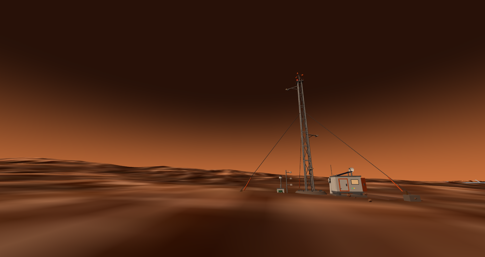
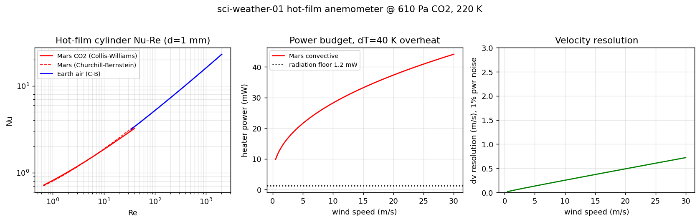
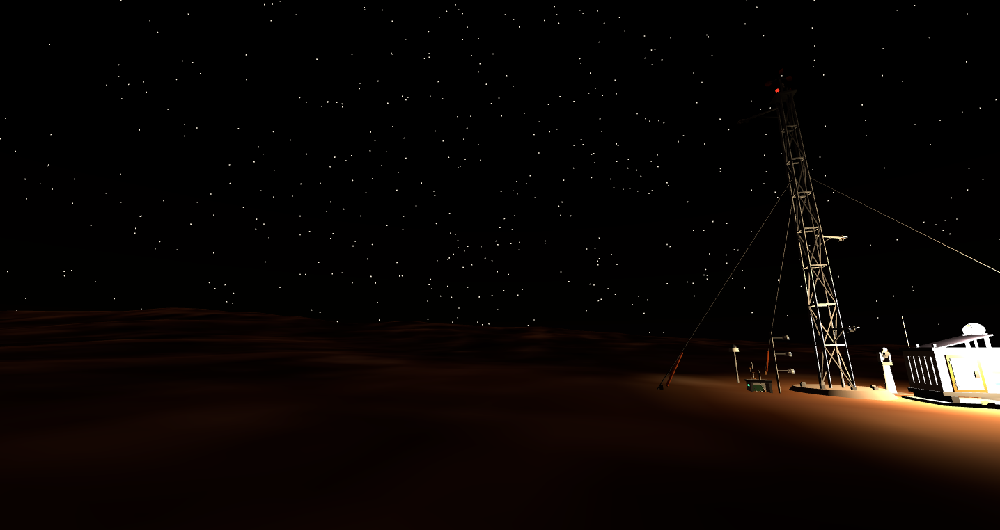
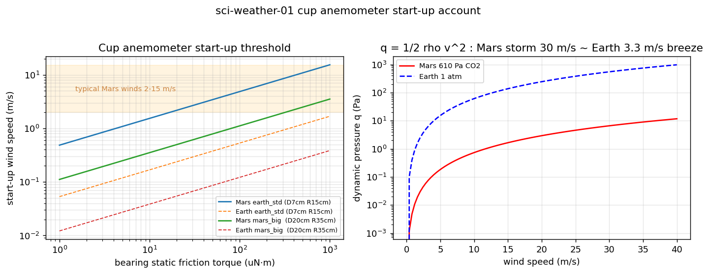
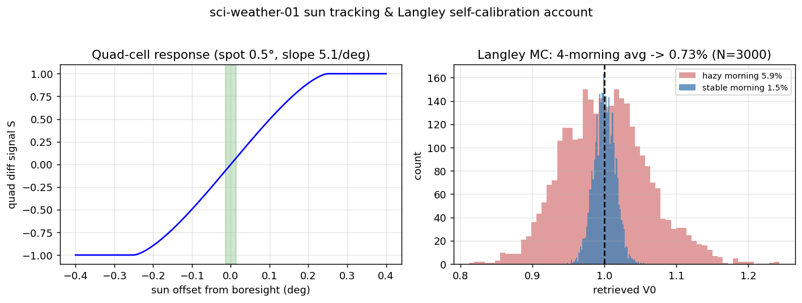

A 10 m lattice tower that decides when greenhouses switch to LEDs and helicopters stay home

Three-level hot-film anemometry (MEDA heritage), barometer enclosure, sun-tracking photometer, equipment cabin — guyed for the storms it exists to measure

The 610 Pa problem: hot-film heat transfer with low-pressure Nu–Re correction — why cups are the display and films are the instrument

Night watch: beacon lit, cabin warm — the mast never sleeps through a storm

Cup-starting ledger: 0.79 m/s spin-up in air forty times thinner — the big cups are honest, just slow

Sun-tracking + Langley calibration: four-quadrant residual 0.014°, four-morning average closes the 1% optical-depth assumption
🌪 τ is the productThe 880 nm photometer measures dust optical depth — τ > 3 is the tripwire that switches the greenhouse dome to LED and grounds the scout helicopter
📐 CTA servoOpen-loop films answer in 17–48 s; the bridge servo multiplies bandwidth ×925 to 29.5 ms — gusts measured, not smoothed away
📐 Inlet filterPressure-port aerodynamic low-pass: r = 3 mm keeps f_c at 1.39 Hz — dust devils pass the filter, wind noise does not
📐 Night thermalWarm-electronics-box-in-a-box: 128 W dead-end redesigned to 27.3 W, battery depth-of-discharge 22% on the coldest night
📐 The netThree remote masts triangulate storm fronts: σ_speed 4–5%, σ_azimuth 2.2–2.8°, 1–3.5 min of warning ahead of the wall
In townShares an alarm bus with the radiation station next door — the city's environmental-alert cluster at (300, −300)